这里是西工大-信息安全基础能力训练（Information Security Fundamental Ability Training）课程的实验报告！敬请参观与指正！请勿直球抄袭！本人不对任何抄袭借鉴行为及其后果负责。
适用版本：
- VirtualBox 6.1.16 r140961 (Qt5.6.2)
- ubuntu-18.04.2-desktop-amd64.iso
实验一
实验目的
- 熟悉 VirtualBox 等虚拟机用法，并配置 Ubuntu Linux 实验环境
- 了解和使用 Linux 常用 shell 工具，并掌握通用的帮助或手册用法
- 能够使用基础命令查看主机名、网络配置
- 能够查看 CPU、内存配置与使用状态以及系统内核版本与发行版本
- 能够完成与宿主机的网络配置，理解不同网络配置类型的区别
- 能够对常用软件镜像源进行修改
- 能够在 Linux 环境中配置 SSH 服务
- 熟练使用命令行或 GUI 工具通过 SSH 远程连接 Linux
实验过程
安装 Ubuntu Linux
从官网安装 VirtualBox，从镜像网站下载 Ubuntu 系统，安装虚拟机。
“设置”-“网络”-“连接方式”中改为“桥接网卡”，打开“共享粘贴板”的双向共享。输入 sudo passwd root 修改 root 密码。更换 apt 源，输入 sudo apt-get install gcc perl make。
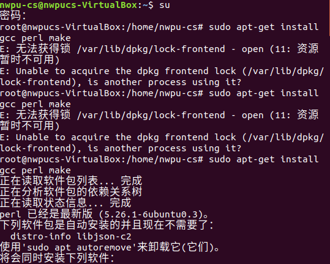
加载 VBoxGuestAdditions.iso，在“设备”中安装增强功能，打开 VBox_GAs_6.1.16，运行软件后输入密码进行安装，安装完毕输入 reboot 重启，打开“无缝模式”。
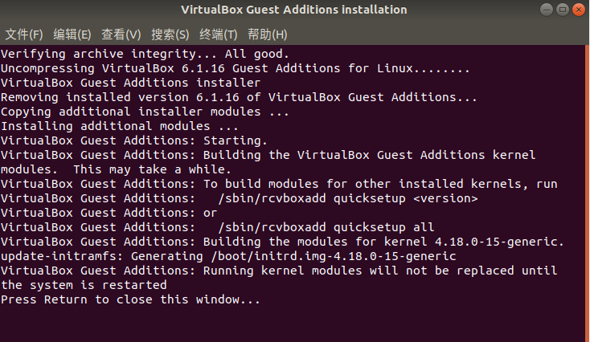
在“设置”-“共享文件夹”中添加共享文件夹。终端中输入 sudo usermod -a -G vboxsf nwpu-cs。安装 vim（sudo apt-get install vim），打开 /etc/sudoers，添加 <yourusername> ALL=NOPASSWD: ALL，按 Esc，输入 :wq! 强制保存。重启后，完成共享文件夹的设置。
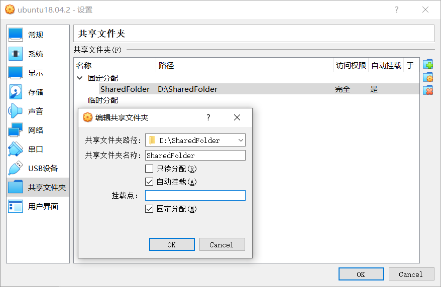
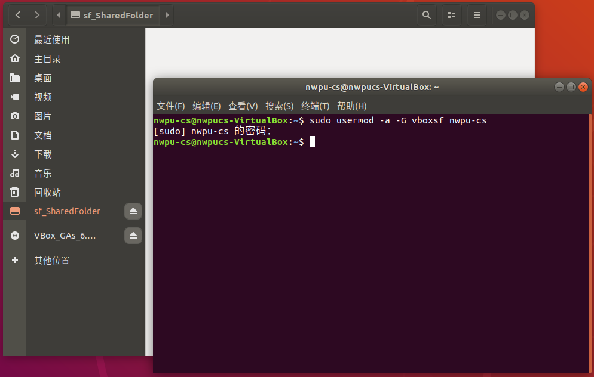
$p.s.\quad$ vim 安装失败，未满足依赖（依赖: vim-common (= 2:7.4.1689-3ubuntu1.5) 但是…），输入如下命令：
1 | sudo apt-get purge vim-common |
熟悉 Ubuntu Linux 命令
打开终端，输入 ls、ls -a、ls -l、ls -t、ls -R 查看文件，得到如下结果：
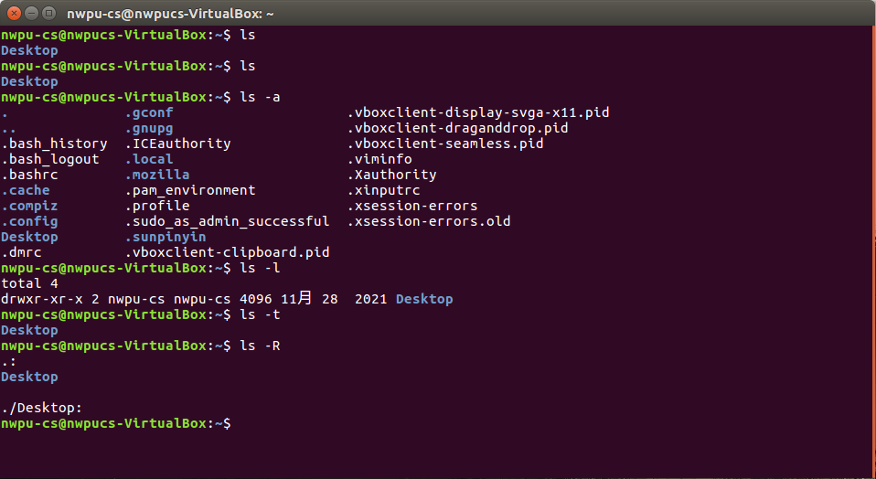
使用“Tab”、“↑”、“↓”来补全命令，成功。
查看 bash 历史记录，输入 history 命令，结果如下：
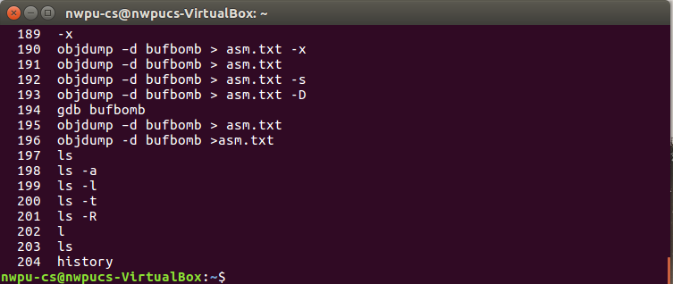
可以看到，这里记录了本用户之前运行过的命令。这些命令被记录在.bash_history 文件中，也可以通过 cat 命令查看。
使用 man 命令查看 ls 手册，输入 man ls 命令，见下图左；执行 ls --help 查看帮助，见下图右：

可以发现，两者同样显示命令的语法，对命令选项的描述也相同。但 man 命令的文档中信息更多，包含作者、错误提交、版权信息等信息。
输入 man pwd 命令，文档在 NAME 栏显示 “print name of current/working directory”, 在 DISCRIPTION 中显示 “Print the full filename of the current working directory.”可以看出 pwd 命令的功能是查看当前工作目录的完整路径。
使用 date、hostname、top、uname 命令来查看系统时间、主机名、实时系统占用情况和内核版本，结果如下：
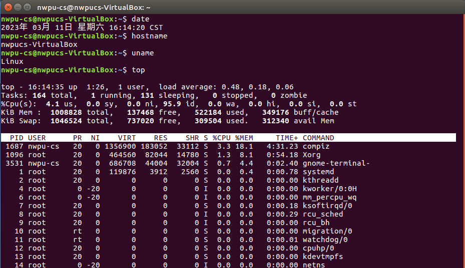
通过 cat 命令查看当前系统中 CPU 信息、内存信息，分别输入 cat /proc/cpuinfo、cat /proc/meminfo 命令，如下：
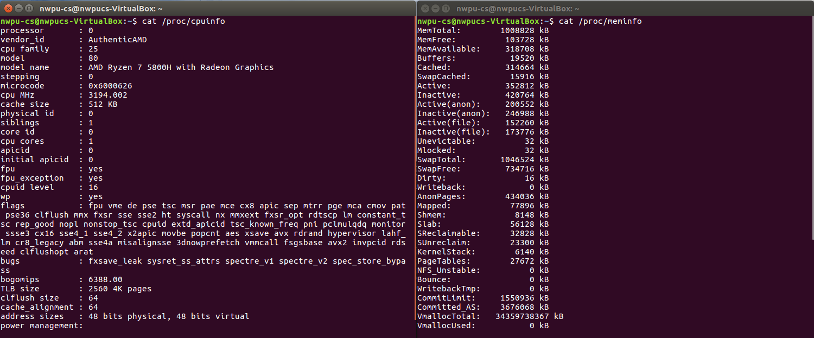
网络配置
NAT 网络
打开管理->全局设定->网络，点击“添加新 NAT 网络。”再选中添加的网络，点“编辑 NAT 网络。”将“网络 CIDR”改为 192.168.56.0/24。
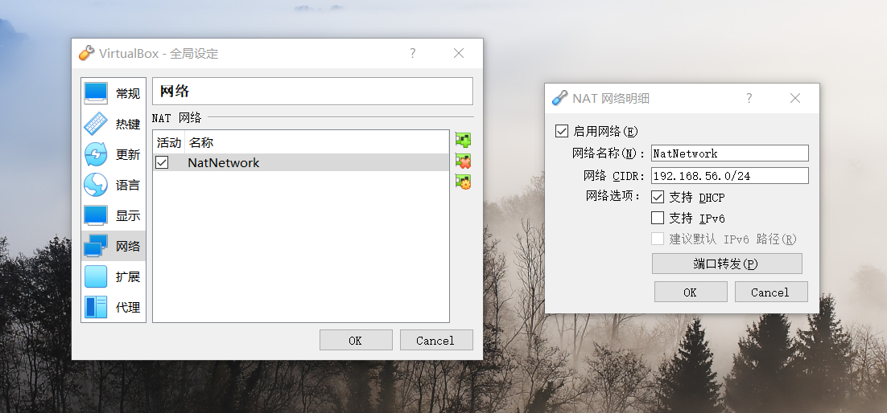
打开虚拟机的“设置”，打开“网络”，在“连接方式”中选择 “NAT 网络”。打开“高级”，在“混杂模式”中选择“全部允许”。
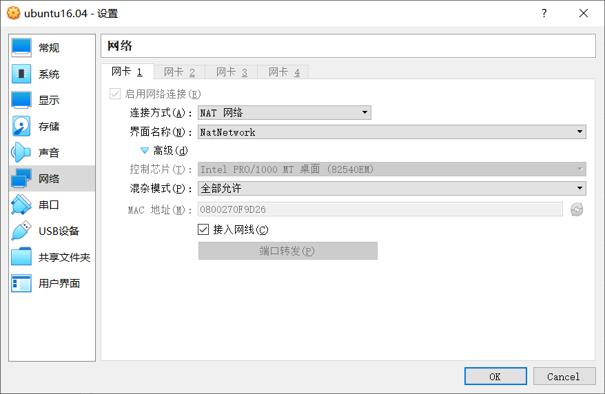
在终端中输入 ifconfig 命令，查看使用“NAT 网络”的网卡名称为“enp0s3”。
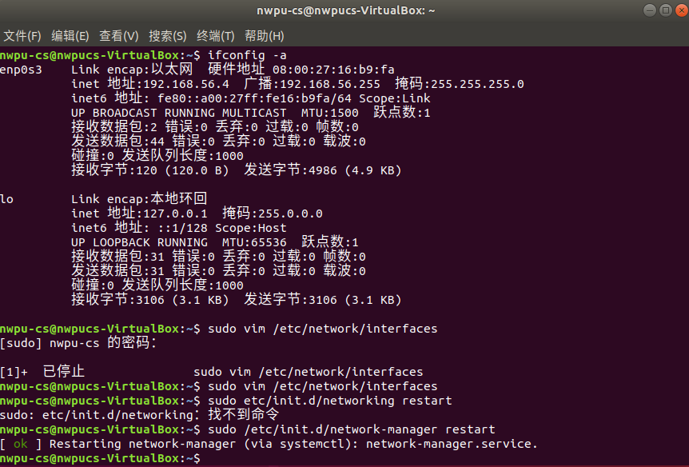
输入 sudo vim /etc/network/interfaces 命令打开 vim 编辑器修改配置文件，在配置文件中添加如下内容（重新装了个虚拟机又试了一次，inet 地址有变动）：
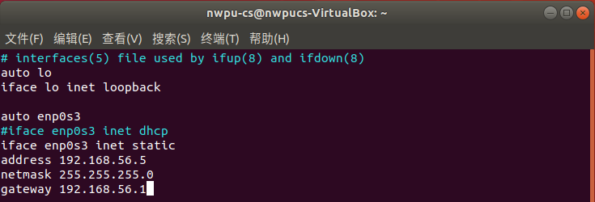
敲 Esc，输入 :wq 保存并退出。重启虚拟机，终端中输入 sudo /etc/init.d/network-manager restart，重启网卡。因未知原因无法成功。
桥接网卡
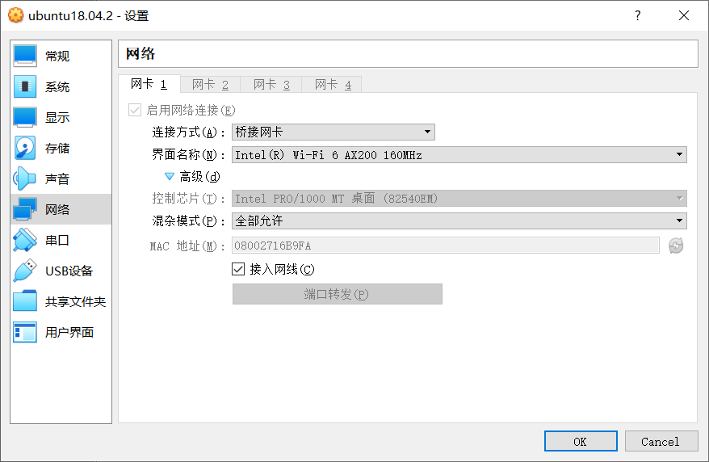
如上图设置。虚拟机可成功联网。
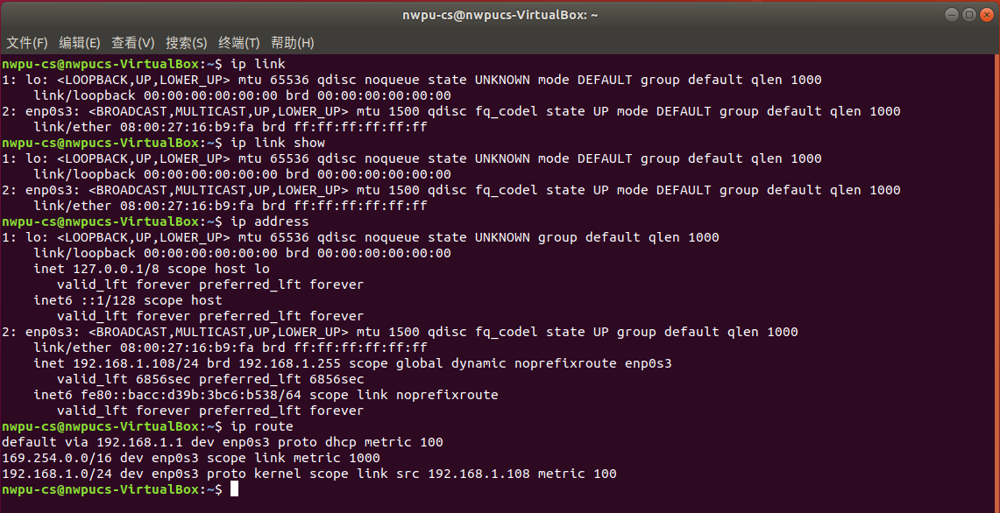
在宿主机中使用 ping 命令来测试与虚拟机的连通性：
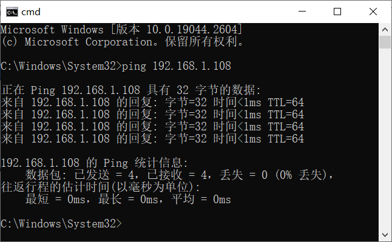
Host-only
打开管理->全局设定->网络，点击“添加新 NAT 网络。”再选中添加的网络，点“编辑 NAT 网络。”将“网络 CIDR”改为 192.168.56.0/24。
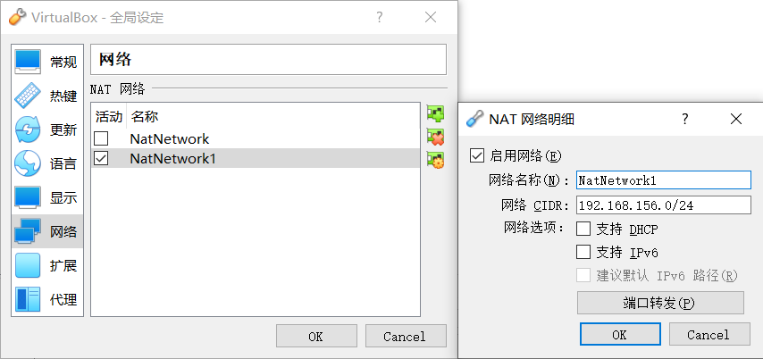
打开虚拟机的“设置”，打开“网络”，在“连接方式”中选择 “仅主机（Host-Only）网络”。打开“高级”，在“混杂模式”中选择“全部允许”。
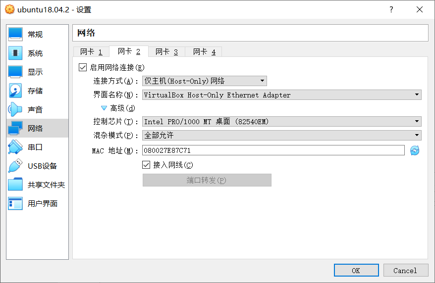
在终端中输入 ifconfig 命令，查看使用 Host-Only 的网卡名称为“enp0s8”。
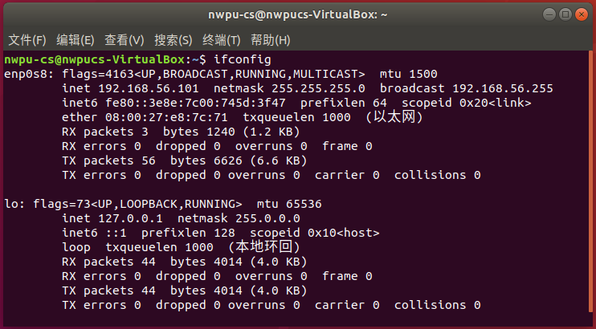
输入 sudo vim /etc/network/interfaces 命令打开 vim 编辑器修改配置文件，在配置文件中添加如下内容，并保存、重启：
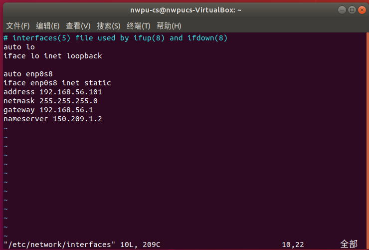
在宿主机中 ping 虚拟机成功，但是虚拟机中不能联网：
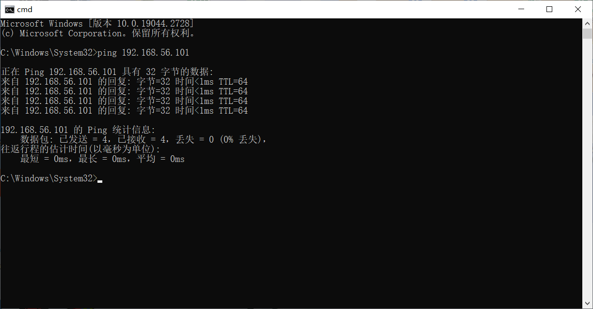
apt 换源
在终端中输入 sudo cp /etc/apt/sources.list sources_backup.list 进行备份。输入 sudo gedit /etc/apt/sources.list 修改 sources.list 文件，添加阿里云源：
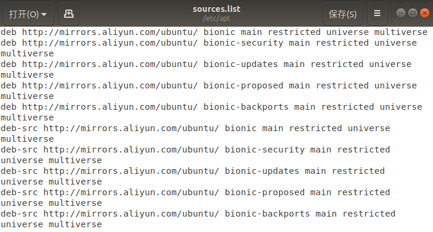
保存后在终端中输入如下命令，完成换源：
1 | sudo apt-get update |
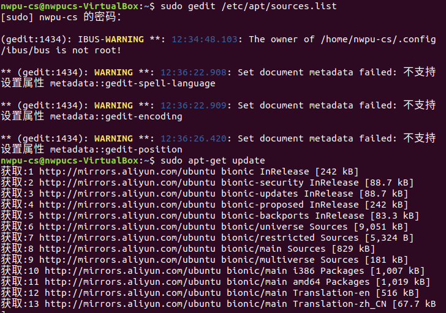
ssh 服务端安装与配置
输入 openssl version，输出 OpenSSL 1.1.0g 2 Nov 2017，发现已安装。
安装以下内容：
1 | sudo apt-get install libssl-dev |
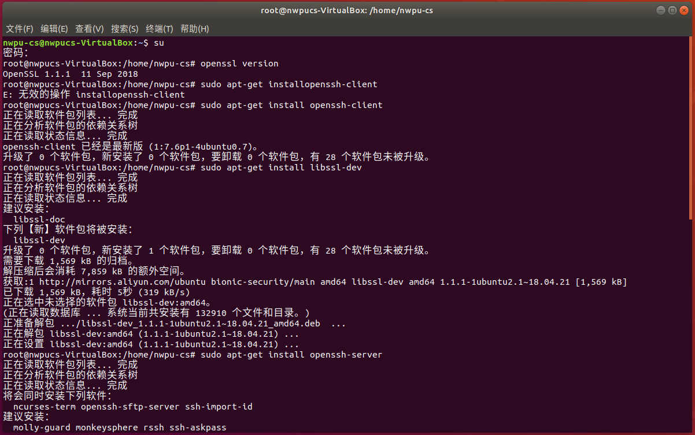
使用 dpkg -l |grep ssh 可查看是否安装成功。使用 sudo service ssh start 启动 ssh-server。使用 sudo ps -e|grep ssh 查看是否启动，若有 sshd 则说明 ssh-server 已经启动。
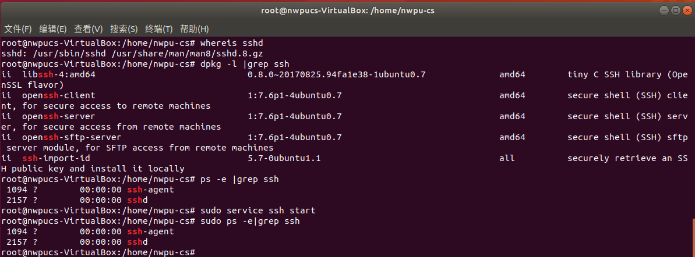
使用 whereis sshd 可找到 ssh-server 所在目录。
使用 sudo vim /etc/ssh/ssh_config 进行 SSH 服务端配置。配置完成后使用 sudo service ssh restart 重启。
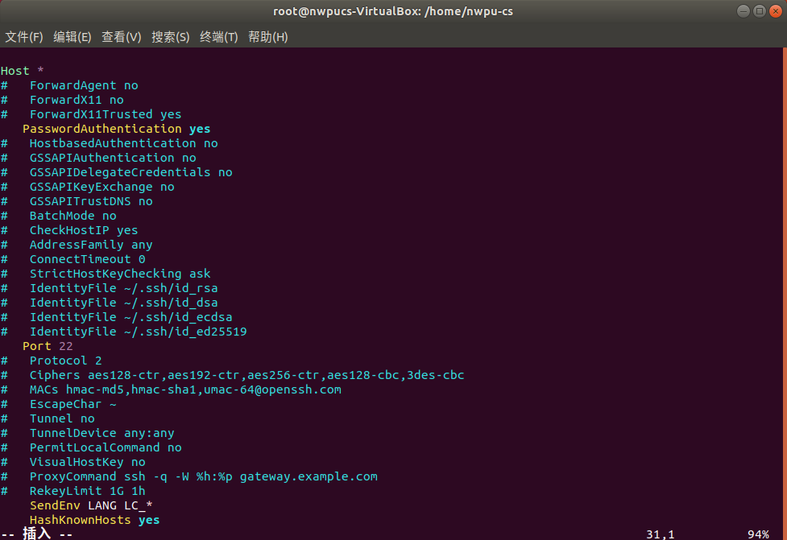
宿主机远程连接
安装网络工具：sudo apt install net-tools
关闭主机和虚拟机防火墙：Ubuntu 中输入 sudo ufw disable，Window 中在 windows 安全中心关闭防火墙。
在虚拟机中使用 ifconfig 或 ip addr 命令查找到 ip 信息：192.168.1.100
安装 MobaXterm，在“Session”-“SSH”-“Basic SSH settings”中输入 Ubuntu 系统的 ip 地址、用户名和端口号并连接。输入密码后，连接成功。
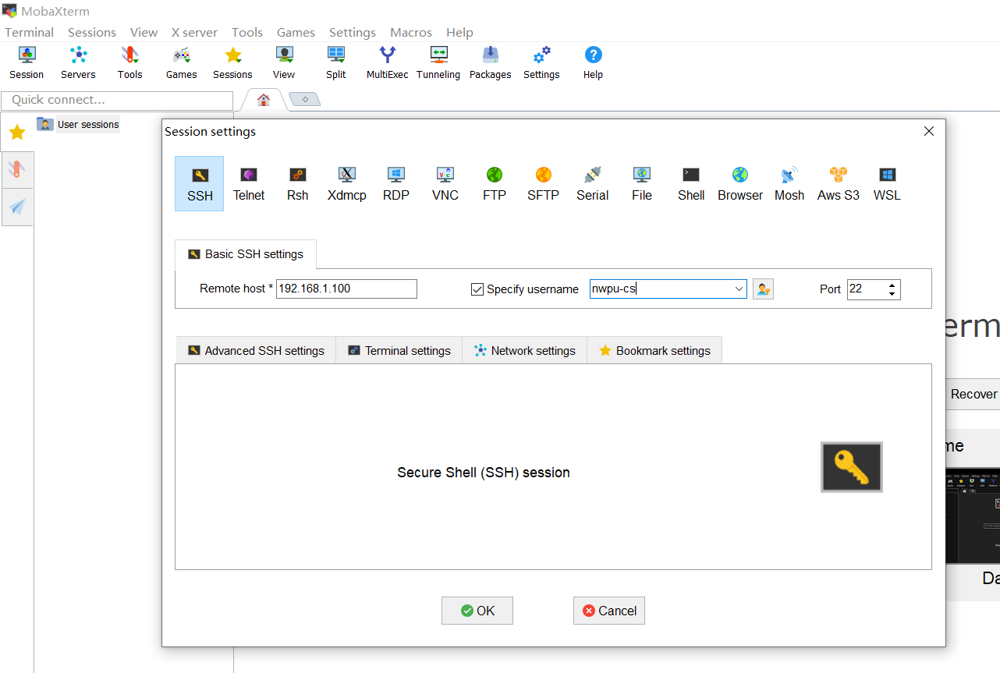
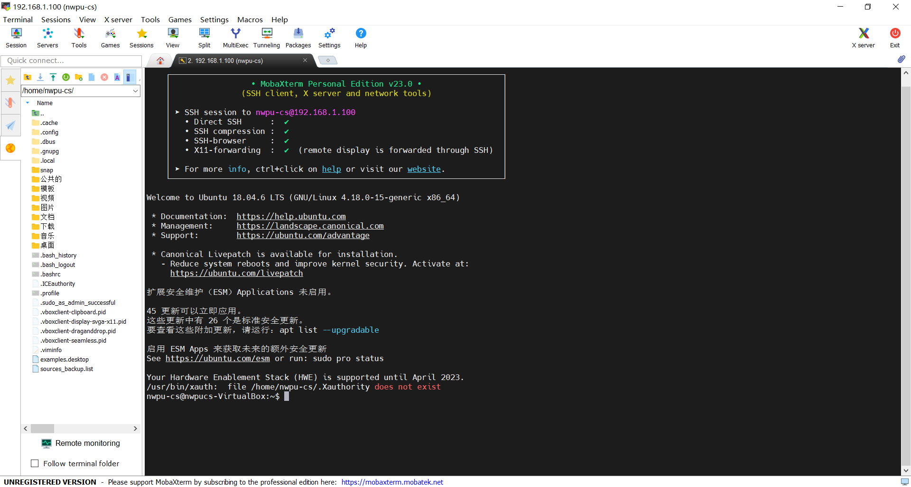
参考资料
- Kali Linux 2022.3 vmware-amd64
- 3 实操部分_哔哩哔哩_bilibili
- 实验 1 VirtualBox 中安装 Ubuntu16.04 - 知乎
- Ubuntu 在命令行下不能够切换字母的大小写，只能输入大写字母_点亮～黑夜的博客-CSDN 博客
- Linux 进入 root 权限的两种方法_linux root_普通网友的博客-CSDN 博客
- TLinux: 执行 sudo apt install gcc 提示“软件包 gcc 没有可安装候选”_weixin_46523365 的博客-CSDN 博客
- Ubuntu16.04 更换 apt 阿里源-CSDN 博客
- ubuntu 16.04 更换国内源_ubuntu16 换源_是你的杰克的博客-CSDN 博客
- Ubuntu 更换国内源（apt 更换源）_docker ubuntu 换国内源_鬼才血脉的博客-CSDN 博客
- 修改 linux 域名解析失败,Ubuntu16.04 更新源失败暂时不能解析域名＂us.archive.ubuntu.com…_kokosK 的博客-CSDN 博客
- 其他笔记 - virtualbox 共享文件夹无访问权限等问题_vboxclient: failed to get display change request, _canmoumou 的博客-CSDN 博客
- 解决 Ubuntu 与 Virtualbox 虚拟机共享文件夹无权限的问题（保姆级）_ubuntu 共享文件夹没有权限访问_孤叶飘飘的博客-CSDN 博客
- linux 系统没有可用的软件包 gcc, 现在没有可用的软件包 vim, 被其它软件包引用了,gcc 命令无法使用…_weixin_39717029 的博客-CSDN 博客
- Ubuntu Vim 安装失败未满足依赖_uupweng 的博客-CSDN 博客
- ubuntu16.04 使用问题笔记 - 佛法无边 - 博客园
- vim /etc/sudoers 修改只读文件_计算机视觉小白之旅的博客-CSDN 博客
- Linux 系统 vim 编辑器使用方法：编辑、保存和退出_linux 保存退出 vim_夏茗 xm 的博客-CSDN 博客
- security - How do I disable Ubuntu Authenticate popup that is used to elevate privileges? - Super User
- password - Authentication for everything - Ask Ubuntu
- ubuntu20.04 重启网络方法_ubuntu 重启网络_一只小菜鸟 ya 的博客-CSDN 博客
- openssl 安装与使用_apt install openssl_puppycuty 的博客-CSDN 博客
- ubuntu20.04 安装 openssh-server 报依赖错误的解决方法_apt-get install openssh-server_萝卜丝 18 的博客-CSDN 博客
- ssh 安装与配置（详解版）_余识-的博客-CSDN 博客
- ubuntu18.04 openssh 客户端和服务端 安装及配置 - 灰信网（软件开发博客聚合）
- SSH 服务配置_ssh 配置_Liq1 的博客-CSDN 博客
- MobaXterm远程登录Ubuntu（详细教程）_mobaxterm ubuntu_孤生i的博客-CSDN博客
实验二
实验目的
- 学习使用常用命令：ls，cd，cat，find，file
- 理解基本的用户与文件权限
实验过程
lesson01-0
根据实验环境输入命令 ssh -p 20004 lesson01@10.81.2.118，远程连接给定目标。
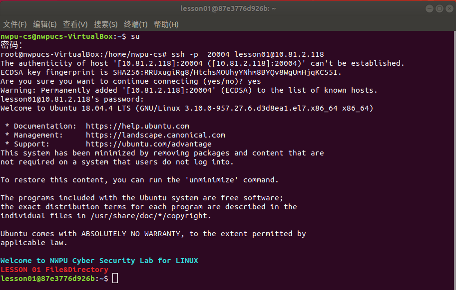
输入 ls 查看文件，输入 cat readme 查看“readme”的内容：ieEWq6ht
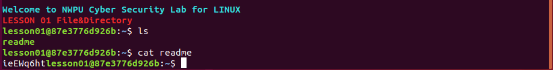
lesson01-1
输入 exit 退出，使用原端口号（中途实验延时一次）和 IP 地址，用 lesson01-1 登录，密码为上述的 ieEWq6ht。
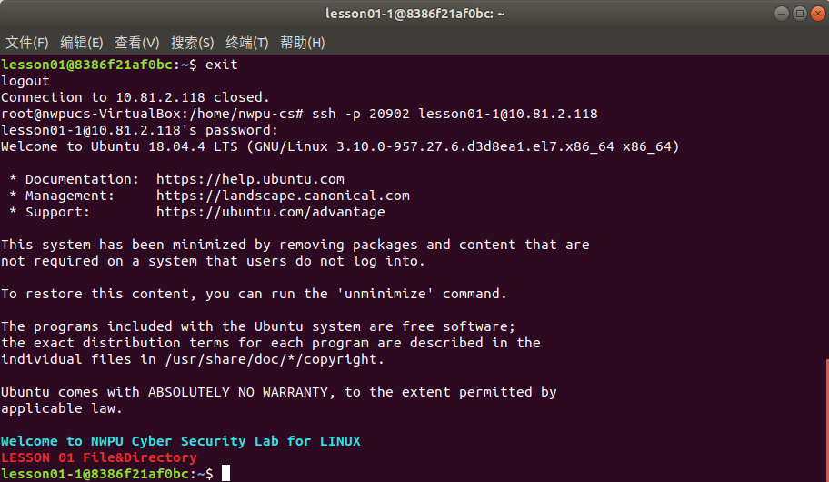
查看文件输入命令：cat ./-，得到密码 gy5f6rs7
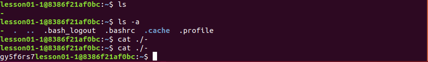
lesson01-2
连接方式同上。查看文件输入命令：cat 'spaces in this filename'，得到密码 iJpMOHR5
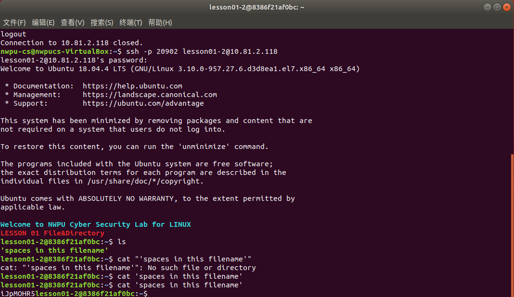
双引号（" "）：弱引用；除 $、‘’、 `、\ 以外所有的字符都解释成字符本身而成为普通字符。
单引号（’ ‘）：强引用；所有的字符包括特殊字符（ $、’'、`、\ ）都解释成字符本身。
反引号（` `）：命令替换；在反引号中的字符串将解释成 shell 命令来执行，且优先执行。
lesson01-3
输入 ls -a 命令查看所有文件和文件夹，发现隐藏文件.hidden，内容/密码为：S5O0FGZb
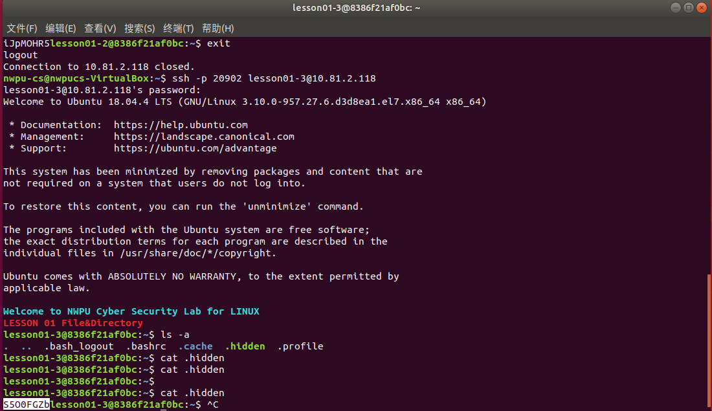
lesson01-4
查看主目录下 ASCII 格式的文本文件内容：使用 file 命令辨识文件类型，查找出 File (7) 为 ASCII 格式的文本文件内容，用 cat 命令查看，得到密码为 s3XECIPV
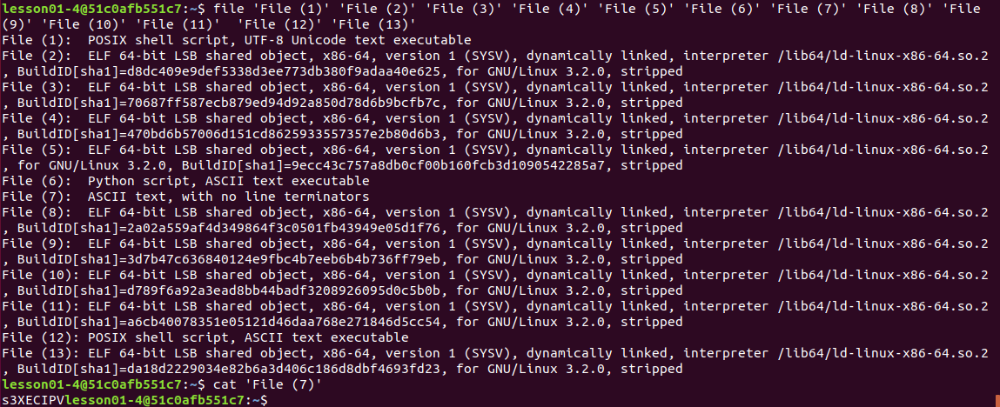
lesson01-5
用 find 命令找出 maybehere 文件夹，进入该文件夹。
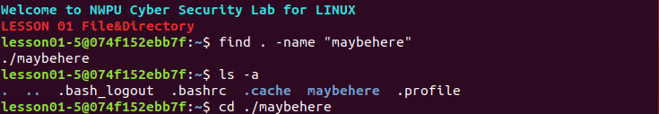
查看该文件夹满足以下条件文件的内容：“文件大小为 1008 字节，文本文件，不可执行”：使用 find . -size 504w -exec ls -l {} \; 命令，查找 504 个字（2 字节）的文件，列出完整路径，找出该文件并查看，最后 8 字符为 gHm7YP4l
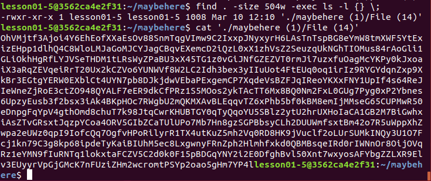
$p.s.\quad$ 完整且符合题意的命令应为 find -size 1008c -type f ! -executable -exec ls -l {} \;
lesson01-6
查找满足以下条件文件：“在/var路径下，属于用户 lesson01-6、属于用户组 lesson01-5、文件大小为 50 字节”，查看该文件内容：使用 find /var -user lesson01-6 -group lesson01-5 -size 50c -exec ls -l {} \; 命令，找出文件并查看，最后 8 字符为 x4jYq8w0
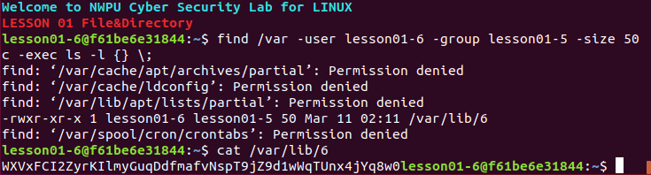
What does {} \; mean in the find command?
Save this answer. If you run find with exec , {} expands to the filename of each file or directory found with find (so that ls in your example gets every found filename as an argument - note that it calls ls or whatever other command you specify once for each file found). Semicolon ; ends the command executed by exec .
What is {} \; at the end of find command?
find -exec uses {} to pass the current file name to the specified command, and \; to mark the end of the the command’s arguments. The \ is needed because ; by itself is special to bash; by typing \; , you can pass a literal ; character as an argument. (You can also type ‘;’ or “;” .)
lesson01-7
使用 ./newcat2 /etc/lesson01_pass 查看文件内容，显示 Congratulations! You have passed the lesson01RNclQnRG
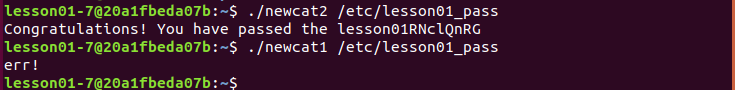
查看文件，两者均为二进制文件。使用 ls -l 查看 newcat1、newcat2 ，发现两个文件权限不同。
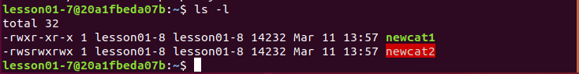
对 newcat1、newcat2 使用 md5sum ./newcat1 ./newcat2 命令计算 md5 校验和，发现校验和相同，说明两者文件内容相同。
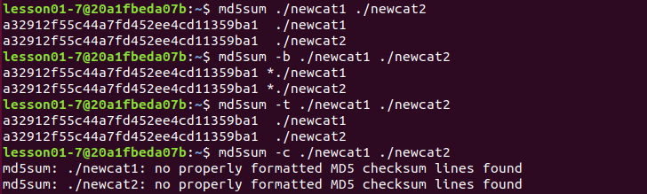
造成此差异的原因是 md5sum 只能比较文件内容而不能比较文件权限，而两个文件权限不同。
参考资料
实验二到实验六均可以参考Bandit的内容。
- 【bandit】WarGame之bandit通关日志 - 简书
- OverTheWire-Bandit 1-27-网盾安全培训
- OverTheWire–bandit–level0~level33 - joker0xxx3 - 博客园
- OverTheWire-Bandit_overthewire bandit_目标是技术宅的博客-CSDN博客
- Wargames学习笔记–Bandit_Zhaohg720的博客-CSDN博客
绝大部分命令和 Shell 都可以在 Linux 教程 中找到。
实验三
实验目的
- 巩固使用常用命令：ls，cd，cat，find，file
- 学习使用常用命令：grep，sort，uniq，strings，diff
实验过程
lesson02-0
SSH 远程连接同上个实验。
查找文件 data.txt 中，单词“millionth”后到段落结尾的文本内容：
使用 grep -n millionth data.txt 查找到单词 millionth 所在段落内容为：
millionth TESKZC0XvTetK0ObTUeMb5STk5iWrBvP
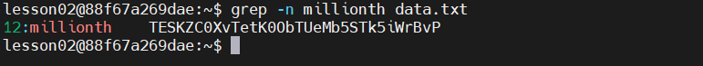
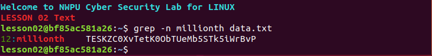
（出于笔记本电量原因先在 MobaXterm 中做了一遍）
$p.s.\quad$ 使用 grep -A98567 -n millionth data.txt 可查看从 millionth 之后所有行的内容，98567 是指原文件共有 98567 行，因此使用 -A 参数最多需要输出这么多行。
lesson02-1
查找文件 data.txt 中，仅出现一次的文本行：
使用 sort data.txt | uniq -u 命令，查找文件 data.txt 中仅出现一次的文本行，得到：
EN632PlfYiZbn3PhVK3XOGSlNInNE00t
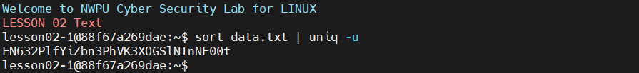
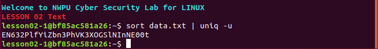
lesson02-2
查找文件 data.txt 中，查找以几个“=”开头的 ASCII 字符串：
使用 strings 命令查看文件中的字符串，并用 grep 进行过滤，命令是 strings ./data.txt | grep -n =
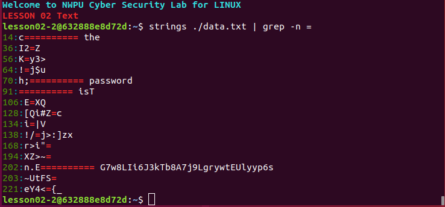
显然，the password is G7w8LIi6J3kTb8A7j9LgrywtEUlyyp6s .
lesson02-3
查找文件 passwords.old 和 passwords.new：
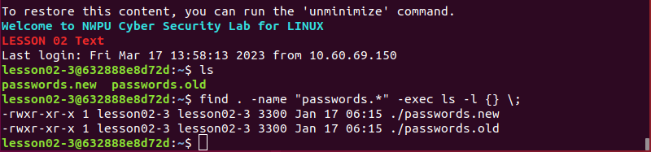
比较 passwords.old 和 passwords.new 文件内容，获取已更改的行内容：
使用 diff ./passwords.new ./passwords.old 命令比较文件内容的不同之处，也可以添加 -y --suppress-common-lines 参数：
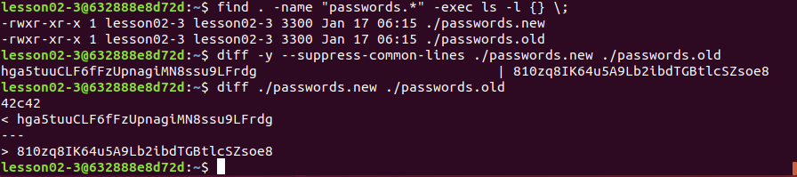
"<“表示后面文件比前面文件少了该行内容，而”>"表示后面文件比前面文件多了该行内容。显然，更改前该行的原内容是 810zq8IK64u5A9Lb2ibdTGBtlcSZsoe8，而更改后该行的内容是 hga5tuuCLF6fFzUpnagiMN8ssu9LFrdg。
实验四
实验目的
- 学习使用常用命令：crontab
- 能够阅读理解简单的 Shell 脚本
实验过程
通过 SSH 远程连接给定目标：同前 2 个实验，ssh -p 25724 lesson03@10.81.2.118。
lesson03-1
在 /etc/cron.d 查找定时任务 cronjob_lesson03_1，思考该任务的执行周期是多长？分析该定时任务写入临时文件的内容：
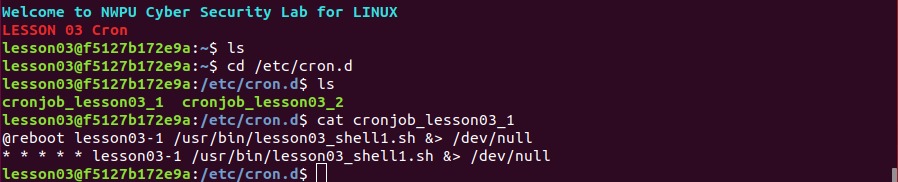
1 | @reboot lesson03-1 /usr/bin/lesson03_shell1.sh &> /dev/null |
上面的定时任务出现了五个*，说明该任务执行周期为：每分钟执行一次。
该脚本在后台运行，并丢弃所有标准输出和标准错误输出。
vim 打开脚本文件 /usr/bin/lesson03_shell1.sh 发现，它将 /etc/lesson03_pass/lesson03_1 的内容重定向到 /tmp/t7O6lds9S0RqQh9aMcz6ShpAoZKF7fgv 中。
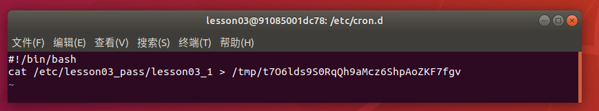
#!/bin/bash 是指此脚本使用 /bin/bash 来解释执行。其中，#! 是一个特殊的表示符，后面紧跟着解释此脚本的 shell 路径。
命令>文件名 为 输出重定向；命令>>文件名 为 输出追加重定向，前两者等同于 1>、1>>；符号 2>（或追加符号 2>>）表示对错误输出设备重定向；&>将标准输出和错误输出同时送到同一文件中。
使用 cat 命令查看 /tmp/t7O6lds9S0RqQh9aMcz6ShpAoZKF7fgv，其中存放着一串字符 750246E8-F75F-93FF-FBD8-55276B5C80BD
lesson03-2
在 /etc/cron.d 查找定时任务 cronjob_lesson03_2，分析该定时任务写入临时文件的内容：
使用 cat 查看 cronjob_lesson03_2，定时任务如下：
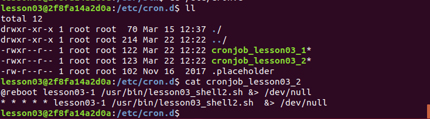
1 | @reboot lesson03-1 /usr/bin/lesson03_shell2.sh &> /dev/null |
注意到该任务的用户同样是 lesson03-1。
vim 打开脚本文件 /usr/bin/lesson03_shell2.sh 发现：
1 |
|
第二行这里 $( ) 与 反引号 一样都用来命令替换，将 whoami 命令（获取用户名）的结果，即用户名赋值给 myname。
第三行 echo 命令显示字符串 I am user $myname，通过管道对该字符串进行 md5 加密，然后用 cut 命令取以空格为分隔符的第一个字符串，赋值给 mytarget。
第四行显示字符串 Copying passwordfile /etc/lesson03_pass/$myname to /tmp/$mytarget。
第五行将 /etc/lesson03_pass/$myname 的内容写入 /tmp/$mytarget 当中。
使用 sh 直接执行上述脚本文件，发现没有查看 /etc/lesson03_pass/lesson03 的权限。
使用 cat /etc/passwd 查看所有用户，发现除 lesson03 外还有一个用户 lesson03-1。再结合上文提到了定时任务 cronjob_lesson03_2 的用户是 lesson03-1，可以推知，脚本中的 $myname，即 $(whoami) 应当是 lesson03-1。
尝试 echo I am user lesson03-1 | md5sum | cut -d ' ' -f 1 命令，得到一串字符串： f0e75b0176966cb3f4afd42278d75367，再使用 cat /tmp/f0e75b0176966cb3f4afd42278d75367 命令，结果如下，得到 C0B813FC-04B7-A447-9358-5286DFCCE0AC：

实验五
实验目的
- 理解 cron 配置文件和 shell 脚本
- 编写简单的 shell 脚本
实验过程
SSH 远程连接：同上
分析已经存在的定时任务
在 /etc/cron.d 发现定时任务 cronjob_lesson04_1，查看该任务得到：
1 | * * * * * lesson04-root /usr/bin/lesson04_1.sh &> /dev/null |
发现该任务每分钟将 /usr/bin/lesson04_1.sh 执行一次，并丢弃所有标准输出和标准错误输出。查看该脚本，得到：
1 | !/bin/bash |
第一行指定 shell 脚本解释器的路径；
第二行进入 /var/spool/lesson04-1 目录；
之后，对上述目录下的所有文件：将文件名赋给 i，若文件名不为“.”且文件名不为“..”，则查看（stat：查看文件的 inode 内容）该文件所有者的用户名（参数 --format “%U”），赋值给 owner 。若该用户名是 lesson04-1，则执行 i 文件，在 30 秒后超时，发送 SIGKILL 信号终止进程。之后删除该文件。总而言之，该脚本的作用即执行该目录下脚本文件并删除。
获取 /etc/lesson04_2_pass 内容
获取该内容需要我们自己去写一个脚本，然后放进 /var/spool/lesson04-1 目录中执行，这个脚本的作用是将 /etc/lesson04_2_pass 中的内容重定向到可读的位置。
实验过程中我们所编写的脚本的用户是 lesson04-1，根据上述对定时任务的分析（若该用户名是 lesson04-1，则执行 i 文件），发现我们编写的脚本可以在 /var/spool/lesson04-1 目录中被自动执行，满足要求。
该脚本需要在可写的目录下来编写，然后拷贝到 /var/spool/lesson04-1 目录中。/var/spool/lesson04-1 目录的权限是 drwxrwxrwx，因此拷贝操作可以成功执行。使用 find / -type d -perm -222 -exec ls -adl {} \; 命令可以找出主目录中满足用户、群组、其他人可写权限的目录（以及大于此权限的目录），搜索到如下目录：
我们选择 /tmp 目录作为我们编写脚本的位置。
在该目录下创建新目录： mkdir /tmp/test，进入该目录： cd /tmp/test，创建并编写脚本文件 test. sh： cat > /tmp/test/test.sh，脚本内容如下：
1 |
|
使用 chmod 命令为该文件和所在目录添加可执行权限，然后将该脚本拷贝到 /var/spool/lesson04-1 目录中，等待结果：
等待一会之后，输入 vim /tmp/test/test.sh 命令，可以看到文件中多了一行字符串，这行字符串即为 /etc/lesson04_2_pass 的内容：k6t69HILKC
$p.s.\quad$ ^M 是 vim 显示 0xD（\r） 的方式，即回车符。使用 cat 查看就不会出现该字符。
$p.s.\quad$ 这里不应该使用 test 作为目录名和程序名。不过既然已经成功运行过了，此处就暂且不重新再做了。
在实际工作中，大多数脚本程序都会大量使用“[ ]”或“test”命令——即 shell 的布尔判断命令。… 因为 test 命令在 shell 脚本程序以外用得并不是很频繁，所以许多很少编写 shell 脚本程序的 UNIX 用户往往会自己编写一个简单的程序并把它叫做 test。如果一个这样的程序不能够工作，十有八九是因为它与 shell 中的 test 命令发生了冲突。要想查看你自己的系统是否有一个与此同名的外部命令，可以试试“which test”这祥的命令，检查结果一般会是 /bintest 或 /usr/bin/test。——《Linux 程序设计（原书第 2 版）》
实验六
实验目的
- 编写简单的 shell 脚本
- 理解 linux 中管道的使用
实验过程
SSH 远程连接给定目标同上，密码为 k6t69HILKC。
要求与思路
题目：主目录有一个程序，他需要一个正确的口令来告诉你下一关的密码。提示：口令格式为 lesson04-2xxxx，其中 xxxx 为纯数字。
使用 ls -l 发现主目录中的 crackme，执行该文件发现，该文件最多只能执行五次，而执行之后可尝试输入口令的次数没有限制。
由上述条件可知，我们需要写脚本来遍历所有可能的口令，并输入到 crackme 文件中去执行。这一过程是暴力破解的过程。同时，必须保证 crackme 文件只被执行一次。
可能的思路有：
- 编写脚本，该脚本执行过程为：使用 for 循环生成口令的同时，通过管道输出到 crackme 文件中去执行，将执行结果重定向到另一个文件中（rst）；
- 编写脚本，在该脚本中使用 for 循环生成口令，执行该脚本，并将输出通过管道传递给 crackme 文件，将执行结果重定向到另一个文件中；
- 编写脚本，该脚本执行时生成所有可能的口令并存储到另一个文件中。将该口令文件逐行输出，并使用管道传递给 crackme 文件中去执行，将执行结果重定向到另一个文件中。
思路1实现与结果
上文的思路 1：使用 cat > a.sh 创建一个脚本文件，并写入如下脚本：
1 | !/bin/bash |
seq -f %04g 0 9999 表示输出一段从 0 到 9999 的指定格式的序列，格式为 4 位输出，不足四位则在高位补 0。对于这个序列中的每一条数字，在前面补上 "lesson04-2" 之后，作为口令用 echo 命令输出，通过管道传递到 crackme 中执行，将执行结果传递到 rst 中。
上图为执行脚本后的结果。尽管在 echo "lesson04-2"$i | ./crackme > rst 这一行的命令中有 问题（为避免覆盖掉得到的密码，应该用追加的输出重定向 >> 而非输出重定向 >），我们仍可以通过思路本身和结果看出，这个脚本文件错误地将 crackme 执行了五次以上，从而导致文件无法再被执行，这一思路是错误的。
思路2实现与结果
思路 2：使用 cat > a.sh 创建一个脚本文件，并写入如下脚本：
1 | !/bin/bash |
给脚本赋予权限（chmod 777 a.sh），执行该脚本（./a.sh）后，将输出结果（即口令）用管道传给 crackme，将输出结果重定向到 rst：./a.sh | ./crackme > rst
查看 rst 文件（cat rst），结果如下：
上述脚本和命令成功执行并满足要求，得到下一关的密码为 JlyZprXui1
思路3实现与结果
思路 3：使用 cat > a.sh 创建一个脚本文件，并写入如下脚本：
1 | !/bin/bash |
该脚本的作用是，将 9999 条可能的口令写入 list 文件中，形成一个口令本。
赋予该脚本权限并执行脚本，使用 cat list | ./crackme > rst 命令输出 list 文件内容，并将输出结果传递到 crackme 中执行，将结果重定向到 rst 文件中。
查看 rst 文件，结果如下：
上述脚本和命令成功执行并满足要求，得到下一关的密码为 JlyZprXui1
实验七
实验目的
- 编写简单的 shell 脚本
实验过程
通过 SSH 远程连接给定目标，密码为 JlyZprXui1
要求：主目录下有一个 ssh 登录日志文件，分析文件，将登录失败超过 20 次（不含 20）的 IP 加入到主目录的 ban_waitlist 中，已有 IP 不重复加入。
Q：怎么问 AI，让 AI 来帮我做实验七？
A：输入：在 Linux 系统中，主目录下有一个 ssh 登录日志文件，请你分析文件，将登录失败超过 20 次（不含 20）的 IP 加入到主目录下已有的 ban_waitlist 中，已有 IP 不重复加入。已知可供查找登陆失败日志记录的关键词为“Failed password”（问助教知道的，括号内的就不用给 AI 说了），请你帮我编写一段脚本来满足上述要求。
查看主目录，发现 ssh 登录日志文件 auth.log。使用 less 命令打开，查看到诸多日志。
注意到 ban_waitlist 文件可读可写可执行，查看该文件，发现文件中已经存在一批 IP 条目：
分析 日志文件 和 ban_waitlist 文件，我们有如下发现和思路：
- 查找登录失败的 IP 可以使用
Failed password作为查找关键字，而查找步骤使用grep命令来完成； - 为查找出登录失败超过 20 次的 IP，由于同一 IP 对应日志记录的端口号不同，我们需要单独提取 IP 地址；
- 单独提取 IP 可通过
awk命令来完成，IP 地址在每条“Failed password”记录中的倒数第四列（字段），用$(NF-3)来表示； - 为计算提取出的 IP 的重复次数，并去重输出，可使用
sort | uniq -c命令； - 最后再使用
awk命令，将sort | uniq -c命令输出的内容中重复次数（$1）大于 20 的 IP （$2）提取出来输出； - 输出的 IP 列表可存入一个变量中，由
echo命令逐行追加写入 ban_waitlist 中，完成要求。 - ban_waitlist 文件中已经存放了一些 IP 地址，其中可能已经有出现于 auth.log 中且满足筛选要求的 IP，所以还需要判断输出的 IP 列表中的每个条目是否已经在 ban_waitlist 中出现过。
根据上述思路，编写脚本如下：
1 |
|
赋予该脚本权限并执行，再执行主目录中 check 程序，获取下一关密码为：nqFy6IxULl
彩蛋
- 彩蛋图片：
- 作者：ERykk (user-id: 972314)
- 来源：pixiv ID: 104313252（已删除）